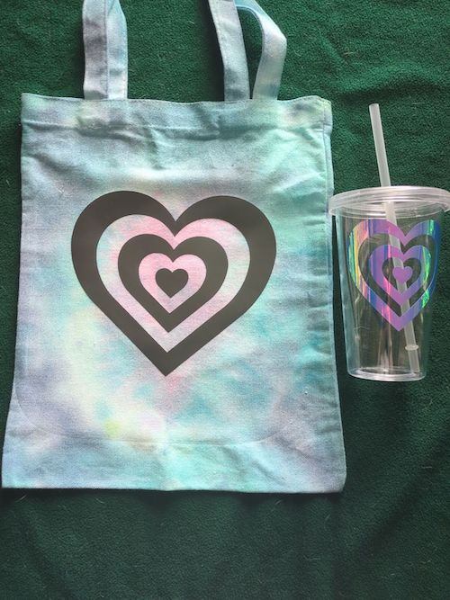

I started working with vinyl when I came to Seton Hill. I started a workstudy that had me create vinyl works to put on the walls of the art building. Most were about the different art exhibitions that were going on. From working with it for the first time I knew it was something I wanted to get into more. I was given a cricket joy and used it to make vinyl to go on tumblers so I could sell. It worked very well. This summer I got a cricket explorer. This allowed me to make my designs bigger. I also purchases a heat press for heat transfer vinyl. There are several different types of vinyl. I olny us permenant and heat transfer. Heat transfer vinyl allows me to put vinyl on fabric. I started tie dying tote bags this summer to put heat transfer vinyl on to sell at a craft show. I made matching tumbler designs to go with the bags.
